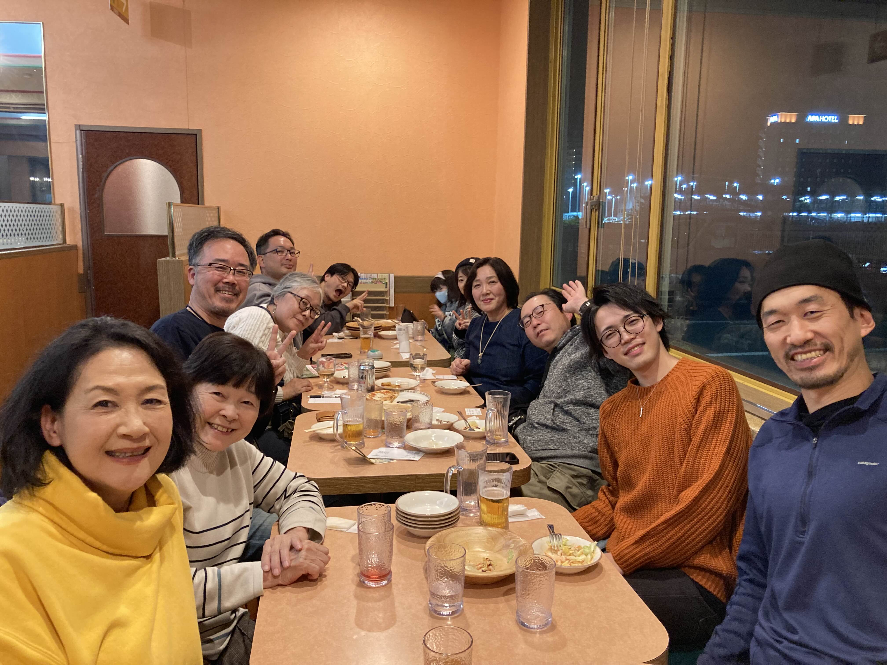

つながる
ひとりでは難しいことも、仲間がいると形になる。
朝カフェ、オンラインミーティング、オフ会など、気軽な出会いから活動が始まります。
Chiba-New-Town Open Community Lab
COCoLaは、千葉ニュータウンが好きな人たちが集まり、 できることや得意なことを持ち寄って、新しいつながりや活動を育てていくコミュニティです。

COCoLaのひとコマ
気軽な交流の場で話したことが、新しい企画やつながりにつながっていきます。
つながる
朝カフェ、オンラインミーティング、オフ会など、気軽な出会いから活動が始まります。
ひろがる
マルシェ、ワークショップ、地域イベントなど、メンバーの個性がそのまま活動の色になります。
About
COCoLa は Chiba-New-Town Open Community Lab の略称です。 千葉ニュータウン在住の人、千葉ニュータウンが好きな人たちが集まり、 自分の得意なことや「やってみたい」を持ち寄って活動しています。
ひとりでは実現が難しいことでも、複数の人がつながることで実現に近づく。 そんな場を目指して、交流・企画・学び・地域との接点づくりを続けています。
Purpose & Activities
COCoLa の活動は、6つの「つくる」を軸に、地域の交流と健全な発展につながることを目指しています。
目的
本団体は、ものづくり、まちづくりをはじめとする6つの「つくる」を通じて、 地域における交流の促進及び地域社会の健全な発展に寄与することを目的とします。
ものをつくる
クラフト、木工、陶芸、金工等の手仕事体験及びワークショップの企画・実施。
詳細ページを見るまちをつくる
マルシェ、イベント等の企画・運営を通じた地域交流及びにぎわい創出。
詳細ページを見るつながりをつくる
年齢や立場を問わず、学び合いと交流が生まれる場をひらきます。
詳細ページを見る食をつくる
食を題材とした体験活動や交流事業を通して、暮らしの豊かさを共有します。
詳細ページを見る自分をつくる
市民一人ひとりの主体性を育む学びや挑戦の機会を提供します。
詳細ページを見るともにつくる
市民、団体、事業者、行政等との連携による協働事業を進めます。
詳細ページを見るその他、上記の目的を達成するために必要な事業を行います。
Atmosphere
COCoLa では、同じことをする人を集めるのではなく、違う得意や関心が混ざることで面白さが生まれます。
イベントをつくる人
マルシェや交流会の企画、出店、運営など、「場をつくる力」が活動を前に進めます。
教える・伝える人
ワークショップやセミナーでは、趣味や専門性がそのまま価値になります。
応援する人
実務、相談、紹介、参加。小さな関わり方も、COCoLa にとって大事な個性です。
Movie
活動の空気感や、COCoLa が大切にしていることを動画でも伝えられるようにしました。
Featured Video
はじめて COCoLa を知る人にも、文章だけでは伝わりにくい空気感や活動の温度が伝わるよう、 紹介動画を埋め込んでいます。
YouTubeで開くTopics
現行の TOPICS 一覧をそのまま読み込み、最近の活動やお知らせがトップから見えるようにしています。